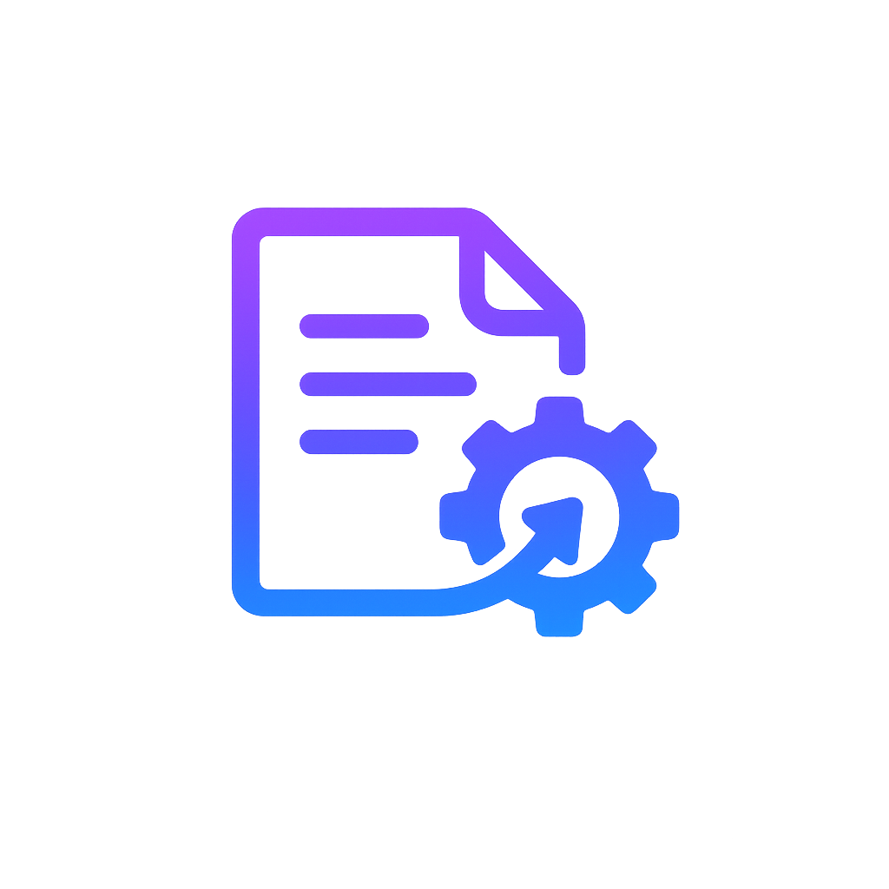

One year ago, I was freshly graduated from high school set on a new journey.
In high school, it was all about getting good grades, training for XC and Track, and working on a startup on the side. During high school, it felt like everything was being done with one goal in mind: get into the best possible college. I despised this mindset, but the environment I was in led me to fall into this trap although not to the same extent as many of my peers. Granted, I did go to Thomas Jefferson High School for Science and Technology. A school filled with hyper-competitive kids.
Building a Startup in High School
One transformative thing that happened to me during high school was building a startup. Sophomore year, my best friend, Sathvik Redrouthu, roped me along his research project turned startup: building photonic chips to serve AI training. Ambitious project, but I didn't have great technical ability at the time, so I stuck to doing mostly the business work early on. We were so naive and we made so many mistakes, but because we were so young, everybody wanted to help us out. We had a lot of mentors and we even got a small check from the 1517 Fund. It was a fun experience.
But after a while, I didn’t have the time or willpower to be what the startup needed me to be and I wanted to move on to things that weren’t deeptech. So after graduation, I left the company.
Summer Before College
So now it’s the middle of summer, I don’t have a job, a goal or anything planned whatsoever. What should I be doing besides spending time with my high school friends? Well I didn’t really know. I ended up using my time leetcoding, rotting, and studying for a cs placement. I wasn’t the most productive.
Through the summer I picked up the habit of scrolling on X/twitter. I’d spend hours every day reading tweets from founders, indie hackers, engineers, and VCs. People were building things, launching products, sharing lessons, and making real money out of nowhere. It was addictive. After a while, I didn’t want to just watch, I wanted to be one of those tweeters.
So what did I have to do? I had to build a startup. Twitter said b2b startups were significantly easier than b2c so I sought to build a b2b startup. From talking to my mom, I learned that building contracts was a slow and annoying process at her company. So I took my mom’s word for it and decided to build a software that allowed users to programmatically build contracts. I didn’t talk to any customers or anyone besides my mom who had the problem I was trying to solve. But I started building the MVP anyways. Here’s some snapshots of what I built:
Yeah it doesn’t look that great. But that wasn’t the problem. The problem was that I was building this product blindly. I didn’t know exactly what my customers wanted and I didn’t exactly know what the end vision was. So I quit and didn’t finish the MVP. So now what do I do??
First Semester of College
I moved into the dorms at the University of Maryland-College Park. It felt like a breath of fresh air. I was now away from home, planted in a highly social atmosphere. My roommate who also went to TJ, Vaibhav, was also into startups and it was great to have that environment in my dorm room.
First semester of college, I thought I could do everything. I thought I could workout everyday, leetcode everyday, build side projects, have a social life, get 8 hours of sleep, and build a startup. Turns out I could not do all those things at once and I decided to focus on one thing for the later half of my semester: build a startup. I also was applying for internships, but I gave up quickly because it felt like I was just sending my resume to black holes. Safe to say, I wasn’t qualified for them at the time.
Vaibhav, my roommate, ended up becoming my co-founder for the next startup I was going to build. We were in our dorm room when we decided that we wanted to build a startup together. We started quickly ideating on what we should build. I’ll spare you the details, but we combed through ideas like a social app for party nights and an app for finding content creators. That night we agreed on an idea to build a marketplace for selling scrap materials. Before building it we decided to talk to people in the space to see if our idea was wanted and feasible (yes, I do learn from my mistakes). We picked up the phone and started cold calling a bunch of people in the materials/chemicals industry; scrap metal dealers, plastic manufacturers, chemical distributors, you name it. We learned that our marketplace idea wasn’t very realistic.
At the same time, we applied to the Telora fellowship run by Eliam Medina who wanted to encourage hackers to start and build startups in Miami. At first Eliam believed in us. He tried to give us a blueprint for building a startup. He told us one thing that we didn’t want to hear. He told us to restart and go back to the drawing board. He asked us who we knew personally that had jobs that we admired. He told us to explore that. When we told him that we didn’t know anyone personally in the chemicals industry, he told us to drop it. We did not listen. We thought we could succeed and prove him wrong. But looking back we should’ve listened to him. He gave good advice and I believe when building a startup you should target an audience you know personally.
I did some bold things because of Eliam. One week he told us to talk to 50 people in the industry we were targeting. We chose energy because my mom works in energy. I ended up skipping my classes for one day and taking the metro to my mom’s office to talk to as many people as I can. I talked to over 20 people at her office and also had a long conversation with the company’s COO. I didn’t come out with any concrete business ideas but I got to learn new things about the energy business that aren’t easily googleable.
Another thing I learned from Eliam was how to talk to customers. I’ve read the mom test (holy grail book for talking to customers) before and I had an idea of how it’s supposed to be done. But Eliam gave a hard blueprint on how to talk to customers. He emphasized asking the hard and uncomfortable questions.
I started using his strategy when talking to potential customers, specifically sales reps at chemical distributors. Our conversations led to a valuable insight. When talking to multiple sales reps at chemical distributors we kept on hearing the same thing: getting qualified leads was the hardest part about their job.
So we strove to build a solution for that. An AI-powered lead qualification SaaS for chemical distributors. We coded up a basic implementation over a weekend and created a demo video out of it. Here was our demo video:
It wasn’t that bad. We sent this to one of the sales reps we were talking to and he liked it. Only problem was that we were talking to a guy who was one level below the decision-maker. This made sales way harder and it turned us into wishful thinkers.
Now, winter break had begun, the holidays were around the corner, and these sales reps don’t work during the holidays. Our point of contact told us to contact him after the holidays when his boss would come back and he’d pitch him the product.
We waited multiple weeks and when we called back, we got excuses for why it was taking so long for a decision to happen. And suddenly, I had lost conviction. I stopped believing that I could sell this and I more or less gave up. I don’t know entirely why, but I think it was a combination of these reasons: I didn’t have a personal connection to anyone in chemical sales, I barely knew how the industry worked outside of my phone call conversations, and there was 3 weeks of no progress being made because of the holidays. We got ghosted and our hopeful startup died. We also got rejected from the Telora fellowship because we weren’t making enough progress which was fair. I gained a lot from Eliam from just 3 calls with him so I highly recommend any college builders to apply to the Telora fellowship.
Spring Semester
My second semester at UMD started and it wasn’t on the best note. I took a long break from having the “I’m going to build a startup” mentality. I also joined UMD startup shell a community of builders. I loved the community and I made a lot of new friends. I also made more new friends in general spring semester compared to fall which made spring more fun socially.

Near the beginning of the semester I started working part-time as a full stack engineer for Mindgrasp.ai, an ed-tech startup founded by UMD-alums. I was honestly was hyped. It was the first time money was hitting my bank account and I felt good. I was very motivated to work for the first few weeks, but then things got more routine.
I also decided I wanted to a build a side project. Yes, a side project first, and any startup aspirations coming second. You see, while I really wanted to build a startup, I actually had no experience going through the full cycle of building a software application from scratch and deploying it for scale. So I wanted to do that. I still wanted to solve a problem so I decided to solve my mom’s problem. She didn’t like creating reports and she was looking for a way to directly “chatgpt” her company information. So I built jirachat.com that allows my mom to do just that with her team’s Jira projects. I didn’t spend more than 1 tweet of marketing on it so I got very few users.
At this point it is finals season and I’m spending a lot of time doing school work. And during this time, I had so many thoughts and ideas running through my head that I wanted to pursue. I wanted to sit down and just code all day. But I couldn’t. I had finals to study for and as much I didn’t care about school, I still cared about school.
And when the semester ended, it was time for me to move, move fast.
Summer after freshman year
From inquiring more about my mom’s work at her company, I got a startup idea that I thought could be viable. So I spent the first 10 days of summer heads down building CuratePDF.com end to end solo from scratch. The early days of summer just consisted of working out, coding, running, and occasionally playing pickleball or disc golf with my friends. After I was done, I learned marketing was easier said than done.
Marketing was also boring to do. A little context: CuratePDF is a document automation tool that allows users to build dynamic templates with a drag & drop editor and create automated document creation workflows with a simple API. I thought I could sell it to energy suppliers to simplify the creation and modification of their correspondence letters. I got in contact with a few people in the energy industry, but I learned that they already had an infrastructure set up for document automation and even if was legacy, my product wasn’t enough for them to switch and migrate over to.
I felt a bit dejected. I knew CuratePDF still had a market, but it wasn’t going to be easy for me to market to that audience. During this time, I also started contracting as a software dev for small businesses (also built a small side project). I ended up contracting with one of the energy suppliers I tried to sell CuratePDF to, building them an AI pipeline for their call center. From that point, I realized contracting was an effective way to get short-term money during my college years as a developer that just ships quick. And trust me, I can build very quick. However, getting contracts does rely on personal connections and it takes some luck to get them.
Also at this time, I wanted to learn and witness the process of going zero to one with a startup product and see how enterprise sales gets done. The best way to do this was to work for a startup that is going through that process. So through my brother's connection, I got in touch with an experienced founder who was building his second company in the insurance vertical. I was super interested because insurance is a similar vertical to energy. I talked to the founder, he liked my attitude and work and gave me an interview for the next day. Granted, I didn't do as well I would've liked on the technical interview and I didn't get the job. I think that was definetely a missed opportunity. But what could I do? I had to move on. I had to keep building anyway and I'll probably go through more roadblocks building a startup without that experience, but it's still important to bias towards action and just do what you want to do.
So what did I learn from building CuratePDF? I learned that I need to focus on building a painkiller idea instead of a vitamin idea.
What’s up for me now
Well now at the time of this writing, I’m focused on building a painkiller idea for the energy industry. Contracting has shown me that I like talking to customers and building solutions directly for them. I want to do that on a much bigger scale than just short term software dev contracts. With only 2 years of college left (yea I'm graduating a year early), I want to build as much as I can. Right now specifically, I want to focus on optimizing the contract cycle for supply chain industries like energy. It’s cool that I’m sort of going back to what I was doing before college started, but this time with a more mature mindset and a lot more experience. For now, I put up a small landing page for my hopefully future startup here at Kollengo.com. I’m focused on building and talking to customers and I won’t be formally launching for a while because I'll need a lot of conversations with customers and more importantly customer feedback to build out a final product. I have a feeling I’ll need VC money sometime in the future. Building this out will be very hard but very rewarding if things go well. I'll be writing more about it in the future. If you made it this far, thank you for reading and I hope these lessons and experiences were valuable to you. If you're on a similar journey or just want to connect, feel free to reach out to me on X @pranav_vell